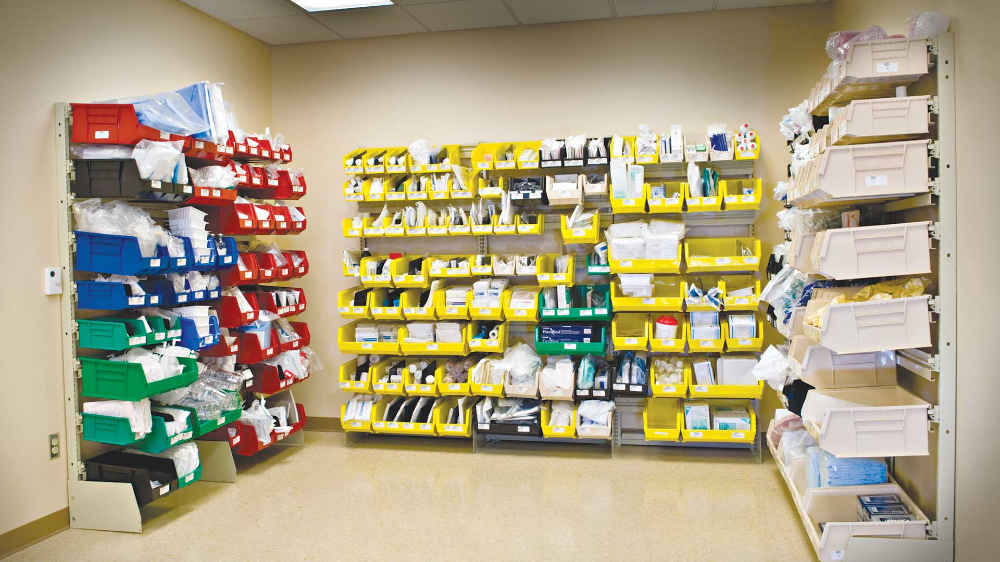
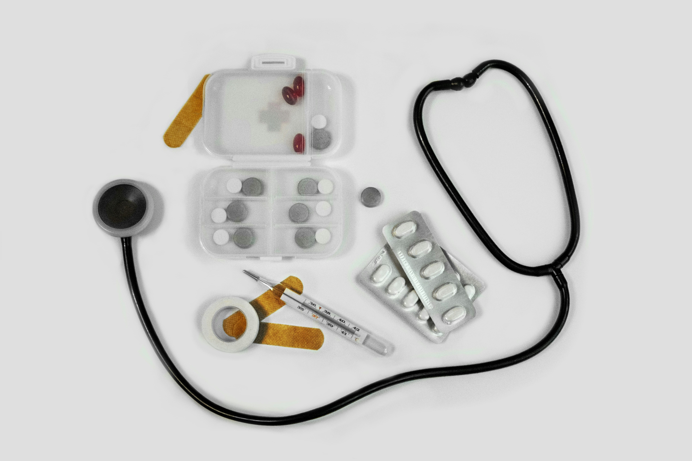

Облік
Як організувати облік медичних запасів?
Основні принципи систематизації даних, контролю залишків та обліку надходження медичних товарів.
Читати статтю →Дізнавайтеся більше про медичні товари, організацію запасів, правила зберігання та використання інформаційних систем у медицині.
Корисна інформація для ознайомлення та навчання.
Основні принципи систематизації даних, контролю залишків та обліку надходження медичних товарів.
Читати статтю →Як цифрові інструменти допомагають упорядковувати медичну інформацію та автоматизувати робочі процеси.
Читати статтю →
На що звертати увагу під час зберігання медичних виробів та організації складських запасів.
Читати статтю →Чому важливо перевіряти терміни придатності та систематично контролювати запаси.
Читати статтю →
Огляд основних груп медичних виробів та їхнього призначення у медичній практиці.
Читати статтю →
Як своєчасний контроль залишків допомагає уникати нестачі необхідних медичних товарів.
Читати статтю →